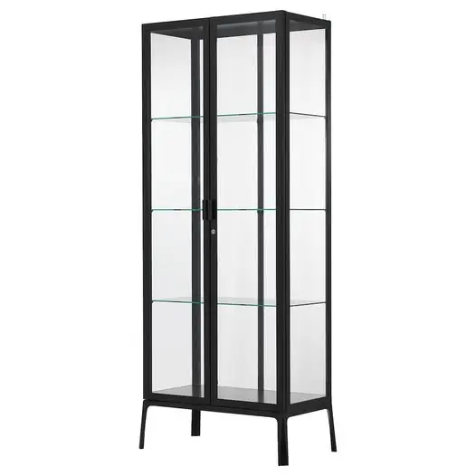
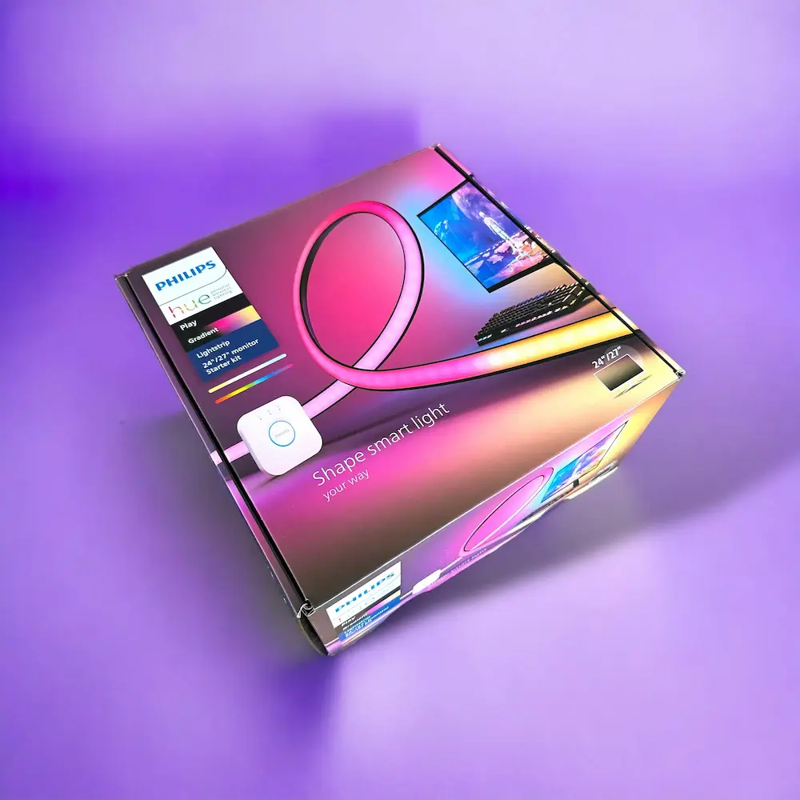
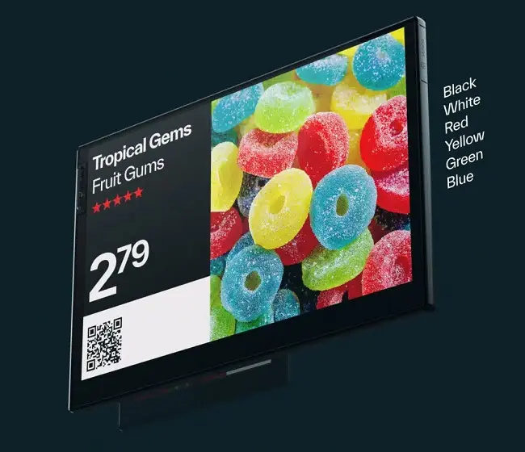
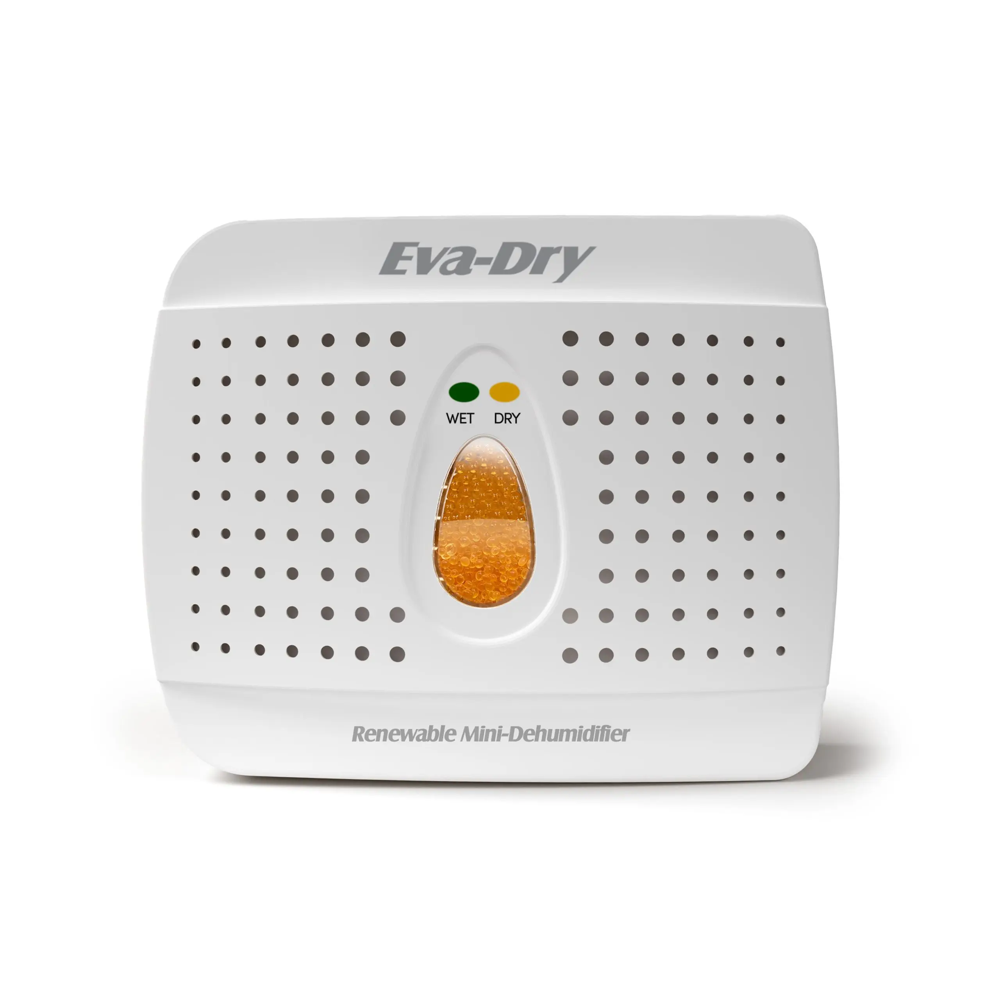
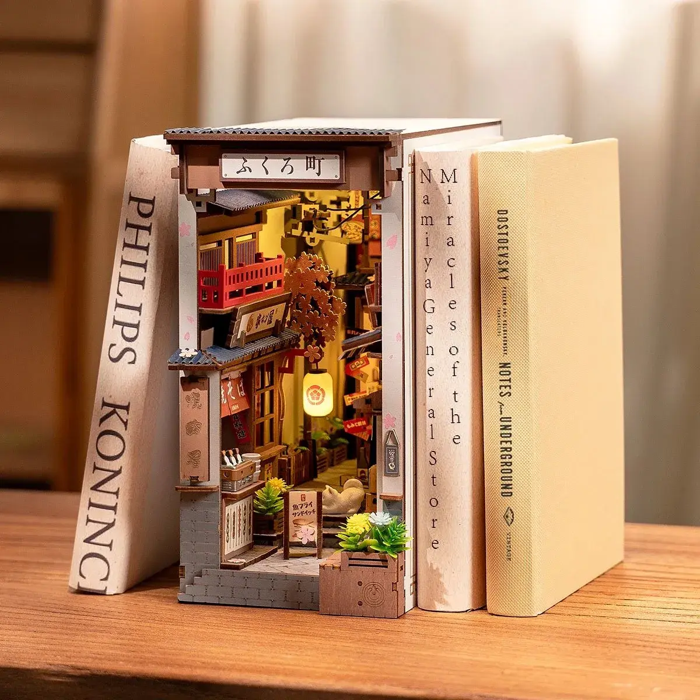

In 2026, a simple bookshelf is no longer enough to host the epic worlds of manga. Your collection deserves something far beyond mere wood and metal; it deserves intelligence, light, and elite protection. In this comprehensive guide, we will take you step-by-step through transforming your shelving from a basic storage unit into a "Lumina"—a protected digital gallery that doesn’t just display your favorite stories, but breathes alongside them.
Step 1: Choosing the Right Cabinet
1. The Luxury Choice: ModuSpace Custom Case (MAX Series) "Where engineering meets art." If budget is merely a number to you, the ModuSpace series is unrivaled. This cabinet is crafted from aerospace-grade reinforced aluminum and ultra-clear tempered glass, ensuring zero light reflection. Its modular system allows you to connect multiple units without any visible borders.
- Key Feature: Supports up to 50kg per shelf and features fully isolated magnetic doors.
- Estimated Price: $500–$1,000 per 100 linear inches.
2. The Budget Choice: IKEA BAGGEBO "Smart minimalism for the start of a journey." For those who want to spend most of their budget on the manga itself, Baggebo is the hero of the economic world. This shelf uses a combination of metal and glass, occupying very little space, but its mesh side structure makes it the best option for creative DIY wiring.
- Key Feature: Ultra-lightweight and easy assembly in under 20 minutes.
- Price: $170 per 100 linear inches.
3. The Popular Choice: IKEA MILSBO "The Gold Standard of the Otaku Community." The most popular choice in 2026 remains the Milsbo. Due to its tall height and generous depth, this model provides enough space

to arrange two rows of manga (or one row of manga and one row of figures). Its high security and protected edges make it the most reliable home for Deluxe editions.- Key Feature: Equipped with a physical lock and high resistance against dust.
- Price: $325 per 100 linear inches.
Technical Note: Choosing a cabinet is not just about buying a piece of furniture; it is your signature on a collection you will live with for years. Before purchasing, be sure to measure your room space with a laser meter.
Step 2: Breathing Life into the Structure; The Magic of Smart Lighting (The Illuminance)
In this stage of building a manga shelf, we arrive at the "smart" part of the story. Lighting in a modern collection is no longer merely for seeing objects; it is a tool for storytelling. We are looking for light that can evoke the atmosphere of an epic battle in Jujutsu Kaisen with purple and blue spectrums, or inject the warm, peaceful feel of a "Slice of Life" manga into the room. In 2026, RGBIC technology (individual control for each light pixel) is the new standard that every Otaku must have.
Here, we introduce three top lighting systems to transform your shelf into a digital work of art:

Philips Hue: The pinnacle of color accuracy and anime-sync technology.
1. The Luxury Choice: Philips Hue Play Gradient Lightstrip "Personal cinema among your shelves." If you are looking for the most perfect color reproduction in the world, Philips Hue is the ultimate choice. This lightstrip not only produces 16 million colors but, thanks to its advanced ecosystem, can fully sync with the anime playing on your TV. The color saturation and smoothness of spectrum transitions in this brand are beyond any other competitor.
- Key Feature: Ability to sync with video and audio (Spotify/Netflix) and a stunning lifespan.
- Price: $180 to $220
2. The Budget Choice: Daybetter Smart LED Strips "Smart brilliance at the lowest cost." For those who want to cover all shelf levels with a limited budget, Daybetter is a miracle. These strips are controlled via a mobile app and feature music-sensitive modes. Although their color accuracy does not match Philips, they perform exceptionally well for creating a consistent and attractive color theme.
- Key Feature: Very easy installation with strong adhesives and a highly competitive price.
- Price: $15 to $25
3. The Popular Choice: Govee RGBIC LED Strip Lights (M1) "The number one choice of the collector community." In 2026, the name Govee is intertwined with the concept of "Gaming and Otaku rooms." The M1 model is the most popular choice due to its high LED density per meter and RGBIC technology. This lightstrip is exactly what gives your shelf the title "Lumina."
- Key Feature: Full compatibility with Google Assistant and Alexa, and exclusive lighting effects for anime.
- Price: $60 to $80
Technical Note: Install the lighting on the front edges of the shelf and face it inward to prevent annoying shadows on the manga spines. Direct light to the eyes causes visual fatigue; our goal is to create a lighting 'halo' around the books.
Step 3: The Mastermind; Digital Displays and Collection Management (The Digital Interface)
At this stage, the manga shelf finds its true identity. The difference between an ordinary library and a "Lumina" lies in its ability to interact with the collector. The use of Electronic Shelf Labels (ESL) or E-ink tags is the same technology used in luxury Tokyo boutiques to display prices and specifications. In 2026, Otakus use these displays to show story arc names, publication status (Ongoing/Completed), and even MyAnimeList scores.

1. The Luxury Choice: VUSION (SES-imagotag) Full Color Series "Ultra-advanced displays with paper-like clarity." This brand is the global leader in ESL technology. Their full-color series displays not just text, but even small manga covers with stunning quality. These displays use advanced communication protocols, and their battery life (if using batteries) reaches up to 5 years.
- Key Feature: Ability to display vivid colors and direct connection to online manga databases.
- Price: $80 to $120 (per display, including the central hub)
2. The Budget Choice: Newton Electronic Shelf Labels (Generic/Refurbished) "Industrial efficiency at an unbelievable price." Many Otakus use stock or generic models to save money. These displays are usually black, white, and red. Although they lack a dedicated app, with a bit of technical knowledge and the use of Bluetooth, you can upload your desired text onto them.
- Key Feature: Very low price and high durability against impact and dust.
- Price: $8 to $15 (per unit)
3. The Popular Choice: Hanshow Stellar Pro Series "The perfect balance between price and features." In 2026, Hanshow has become the favorite brand for collectors. The Stellar Pro model features a very simple mobile app that allows you to change the display text by scanning a QR code. This model is exactly what gives your shelf the appearance of a "modern museum."
- Key Feature: A slim design that sits perfectly on the edges of Milsbo shelves and features Wi-Fi connectivity.
- Price: $25 to $35 (per unit)
Technical Note: To install these displays, use double-sided Nano Tape. This ensures that if you want to change the position of the books on the shelf, you can move the displays without leaving any residue on the glass.
Step 4: The Impenetrable Fortress; Protection Systems and Environmental Control (The Preservation Core)
In this stage, our article delves into the scientific aspects of preserving works of art. For a true Otaku, there is no greater tragedy than the yellowing of manga pages or the fading colors of limited-edition figures due to UV rays and humidity. In 2026, a manga shelf is not just a display case; it is a "time capsule" that simulates museum-grade environmental conditions right in your room.
1. The Luxury Choice: Govee Smart Hygrometer & Dehumidifier System "A smart ecosystem for real-time monitoring." If you want total peace of mind, this smart package is the ultimate choice. The brand's high-precision sensors (Hygrometers) connect to Wi-Fi and report any fluctuations in temperature or humidity directly to your mobile phone. Should humidity rise above the 55% threshold, the system can automatically activate the paired dehumidifier.
- Key Feature: 24-hour monitoring with detailed charts and instant alerts on your phone.
- Price: $120 to $150 (for the complete sensor and device package)

2. The Budget Choice: Eva-Dry E-333 Renewable Dehumidifier "The silent and eternal protector." For those who prefer not to deal with complex wiring, the Eva-Dry is an engineering masterpiece. This small device absorbs humidity inside the shelf without needing electricity (while operating). Once the silica gel beads inside change color, simply plug it into an outlet to renew it.
- Key Feature: No batteries required and a service life of up to 10 years; ideal for the enclosed space of a Milsbo.
- Price: $20 to $30
3. The Popular Choice: Absoglo Smart Compact Dehumidifier "The smart balance between technology and dimensions." This device is specifically designed for semi-enclosed spaces like glass shelves. Absoglo is the top choice for Amazon users in 2026 due to its ultra-slim dimensions (easily hidden behind a row of manga) and its auto-shutoff system. This model features an internal sensor that notifies you with a soft LED light as soon as the water tank is full.
- Key Feature: Ultra-quiet operation (less than 25 dB) that does not disturb the tranquility of your reading room.
- Price: $45 to $60
Editor's Supplementary Note: "If you live in coastal or high-humidity cities, it is recommended to combine the Popular Choice (for moisture absorption) with the Luxury Choice (for monitoring sensors) to bring your collection's security to 100%."
Step 4 (Supplement): Transparent Armor; UV Protection
Light, as much as it adds beauty to your collection, can also be its silent killer. Ultraviolet rays cause chemical bonds in paper and ink to break down. In a "Manga Shelf," we do not allow even a single destructive photon to damage your books.
1. The Luxury Choice: Museum Grade UV-Filtering Acrylic Panels (OP-3) "The standard of the world’s top-tier museums." If you have an unlimited budget, instead of applying films, replace the original shelf glass (such as on the Milsbo) with specialized Acrylite OP-3 acrylic panels.
- Key Feature: Higher visual clarity than glass and permanent protection that never degrades.
- Price: $300 to $500 (for a complete set of glass replacements for one cabinet)
2. The Budget Choice: UV Block Window Tint (DIY Roll) "Maximum protection at minimum cost." The most affordable way to protect your collection is by purchasing rolls of UV protective film that you can install on the glass yourself.
- Key Feature: Cost-effectiveness and the ability to replace it if it gets scratched.
- Price: $15 to $25 (for a full roll)
3. The Popular Choice: 3M Scotchcal UV Protection Film "The perfect balance and a trusted brand." As mentioned before, this product is the first choice for collectors due to its superior adhesive technology and long lifespan.
- Key Feature: Easier installation compared to budget options and exceptionally high transparency.
- Price: $40 to $60
Technical Note: When installing protective films, be sure to use a soft plastic 'Squeegee.' The smallest bubble under the film will appear as a major flaw under the LED lighting of your Manga Shelf.
Step 5: The Personal Signature; Arrangement Accessories and the Final Polish (The Aesthetic Finishing)
In the final stage of building a Manga Shelf, we arrive at the "artistic" part of the process—the point where your shelf transforms from a book warehouse into a personal gallery. In 2026, arranging manga is no longer just about lining up books; it is about utilizing height and layering to ensure every detail is visible.
1. The Luxury Choice: Acrylic Tiered Riser Shelves (Custom) "Tiered display with diamond-like clarity." If you want the back row of manga to sit higher than the front row so that every spine is visible, these tiered stands are essential.
- Key Feature: 100% transparency that makes books appear as if they are floating in space.
- Price: $60 to $90
2. The Budget Choice: Adjustable Metal Bookends "Simple, sturdy, and practical." To keep manga perfectly vertical and prevent them from leaning (which causes spine deformation), metal bookends are the simplest solution.
- Key Feature: Occupies minimal space at a very low price.
- Price: $10 to $15 (4-pack)

3. The Popular Choice: Custom Wood/Acrylic Book Nooks "A gateway to another world between books." The most popular trend of 2026 is the use of Book Nooks. These are illuminated miniature dioramas placed between books that recreate a scene from a Tokyo alleyway or a specific anime world.
- Key Feature: Includes internal lighting that synchronizes with the Lumina's light theme.
- Price: $40 to $70
Technical Note: The Golden Rule of Arrangement. 50% space for Manga, 30% for figures, and 20% "Negative Space" for visual breathing room. Overcrowding the shelf will destroy the grandeur of your Manga Shelf’s lighting.